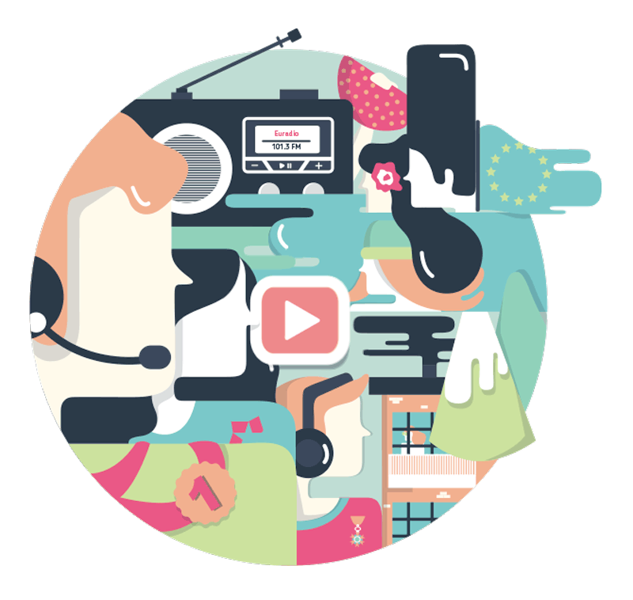
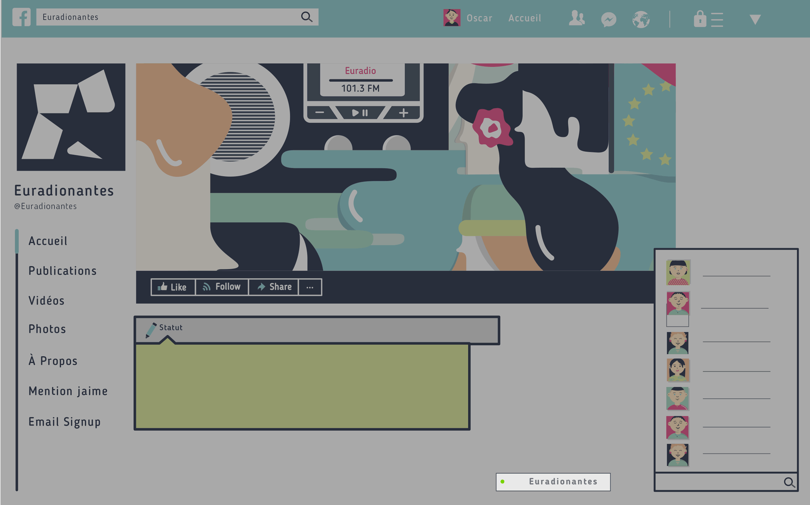
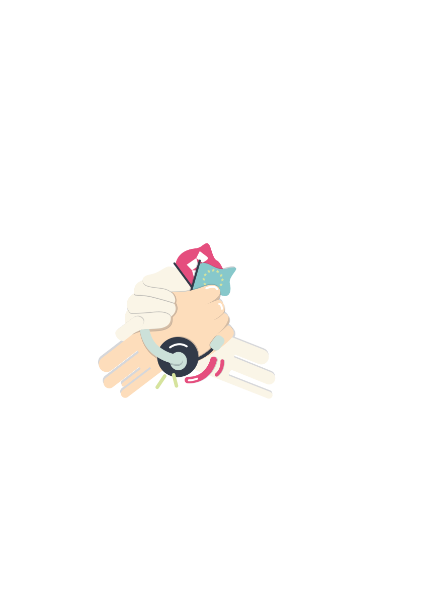
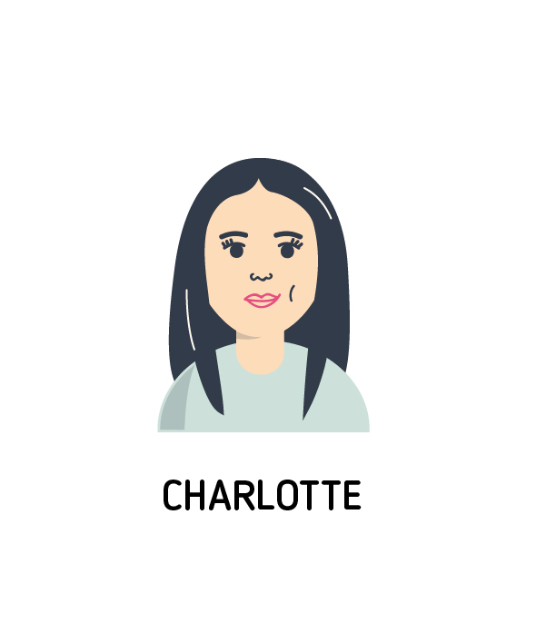
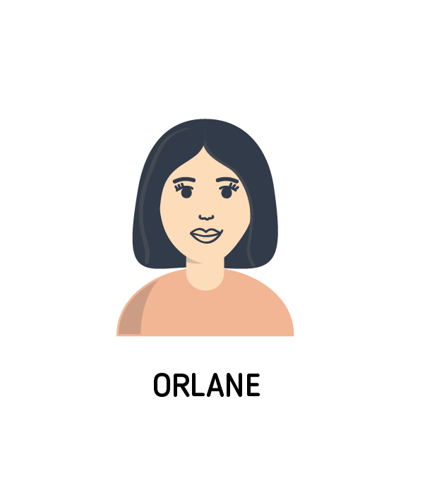
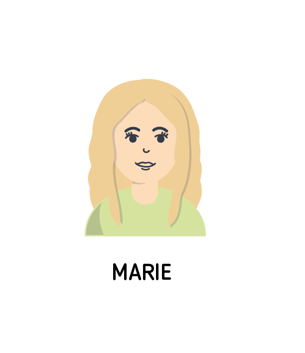
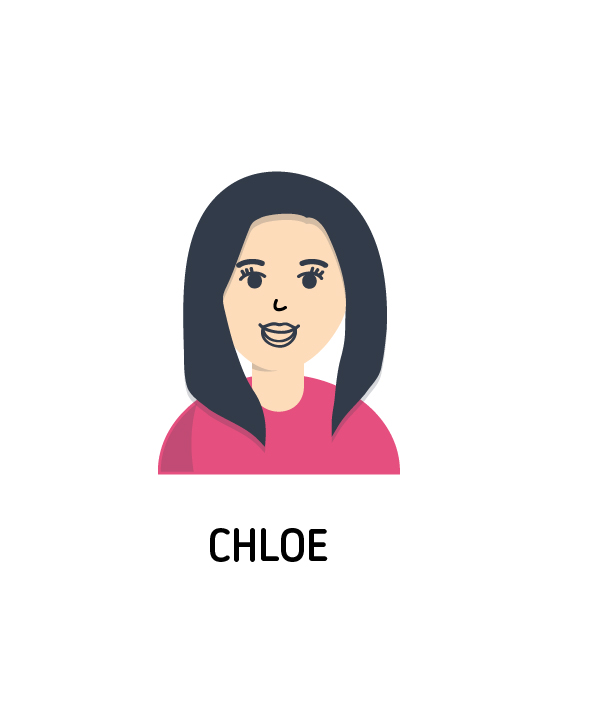
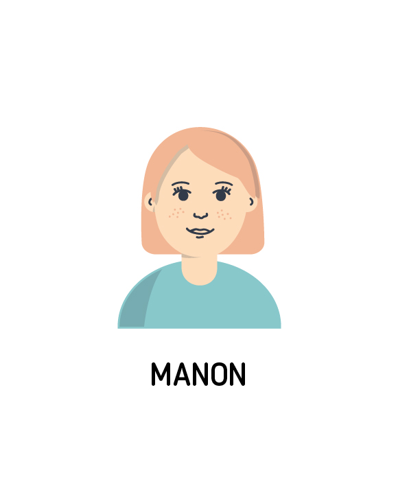

L'Europe au micro: un écho d'ici et d'ailleurs
Euradio, la championne
2007
Prix de l'initiative Européenne
2009
Prix Louise Weiss
du journalisme Européen
décerné à la radio-école
2010
Médaille de l'ordre nationale
du mérite à Laurence Aubron,
fondatrice de la radio
2011
Nomination au prix
du journalisme européen
/ catégorie radio
2014
Prix du citoyen européen
2015
Médaille d'honneur
de la ville de Nantes
IL SE PASSE QUOI SUR EURADIO ?
Avec une soixantaine de programmes
originaux à écouter 24h/24, dont 7h
d’émissions en direct, la radio s’inscrit
dans le quotidien de ses auditeurs
Depuis la fréquence 101.3 fm et le web
player, Euradio décrypte l’actualité
locale-européenne sous une variété
d’angles et de formats.
Culture, débats, politique, émissions musicales, sujets de société, tout y passe !
Grâce aux bénévoles qui animent émissions et chroniques, les langues parlées à l’antenne sont plurielles.
Que serait une radio sans musique ? L’éclectisme et la découverte sont également de mise avec une programmation alternative, qui met à l’honneur des artistes européens
L’Europe vue d’une autre oreille ! Clique sur les flèches
pour faire apparaître les datas relatives aux programmes de la radio !
Teams Euradio
Parce que l’Union fait la force et que la transmission
est essentielle, Euradio a choisi de se positionner
comme une “radio école” pour permettre à
de jeunes étudiants motivés et curieux de faire
vivre une radio à leur image, multiculturelle. Venus
des 4 coins de l’Europe, ils font désormais parti
intégrante de la famille Euradio.
Survolez la carte et découvrez les nationalités
les plus représentées par les stagiaires.
Une fois l’expérience Euradio passée, que sont-ils devenus ?
Ont poursuivi une carrière dans les médias
Ont continué leurs études
N’ont pas continué dans cette voie
PERSONAS - AUDIENCE
Qui sont les auditeurs ? Qui écoute la radio ? Quels sont les profils types des auditeurs ?
Marie, 19 ans.
Étudiante en langues étrangères.
Écoute Euradio pour la musique éclectique, les émissions bilingues et l’ouverture culturelle.Philippe, 53 ans.
Avocat en droit Européen.
Écoute Euradio pour les informations relatives à l’europe et à la politique, ainsi que les débats.Karolina, 25 ans, Allemande.
Étudiante en langues étrangères.
Jeune active, sensible aux thématiques européennes, passionnée de langue française. Écoute Euradio sur le player du site internet.Ils écoutent la radio depuis:
- France
- Royaume-Uni
- Allemagne
- Belgique
- Espagne
- Italie
Et si on communiquait tous ?
L’idée est de créer un endroit dans lequel se retrouve les citoyens du monde, autour d’un thème commun :
l’Europe. L’Europe oui, sans frontière ni barrière !
En réponse aux récents évenements qui agitent le globe, Euradio se veut être un espace de partage, d’échange, autrement dit : réunir “pour mieux
régner”. Les réseaux sociaux apparaissent alors comme une évidence pour rassembler une communauté qui a soif de diversité et d’information.
Quel meilleur moyen qu’internet pour échanger avec des personnes du monde entier ? Apprendre de la différence, découvrir des perles musicales,
vivre l’actualité... Ces auditeurs ont choisi de suivre Euradio sur les réseaux, et qui sait, peut-être en faites vous partie ?

EURADIO VOUS REMERCIE ET VOUS DONNE RENDEZ-VOUS
SUR LES ONDES - 101.3 FM OU SUR EURADIONANTES.EU
L'EQUIPE DU HYBLAB:






